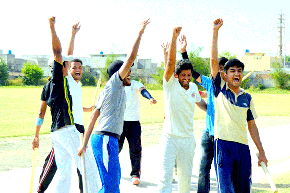

SPORTS

The University provides ample facilities to the students for participation in games and sports, both outdoors and indoors. A Sports Committee
comprising University teachers supervises the sports activities.
Facilities are provided for all the major sports including cricket, hockey, football, tennis, badminton, basketball, squash and athletics.
A series of inter-faculty and inter-hostel tournaments are held to provide
participation to the maximum number of students. Outstanding sportsmen are encouraged to take part in the inter-university tournaments.
The outstanding players are also participating in National level events likely hockey, volleyball and athletics. The exercise facilities are provided in
the Gym in early morning and in the evening. Major types of fitness and exercise machines are available in the university.
The students themselves manage many aspects of life in the halls. The halls are provided with common rooms, dining halls, canteens, mosques and other
such places of common utility. Each hall has its own mess with adequate messing and dining facilities. The mess is run on a no-profit no-loss basis.
A Students Mess Committee under the supervision of a Resident Tutor regulates the weekly menu, finances, billing and quality of the food. The students
are required to abide by the rules and regulations governing residence in the University halls and are encouraged to develop community life conducive
to healthy growth of the social aspects of their personalities.
Internet Facilities in the Hostels The University has 16 Mbps internet bandwidth from PERN (Pakistan Educational Research Network)
and provides high speed internet connectivity to all resident students in the hostels. All the rooms of Iqbal Hall are connected with
LAN of the University through five switches deployed at RT Room. These switches are connected to the Network Administration and
Research Center (NARC) through optical fiber connectivity. The resident students are allowed to use LAN facilities in their rooms
to make their assignments and other research work assigned to them. Quaid-e-Azam Hall is also connected through optical fiber with
NARC, while the other hostels are connected through UTP cables. The students are provided with Wireless Connectivity in these hostels.
Extra Curricular Activities in the Hostels Besides providing adequate residential and messing facilities in the hostels, due consideration is also given to
encourage the resident students to engage themselves in healthy physical and character building social activities. For the purpose, various societies and
clubs have been formed in the hostels. The functioning of these societies and clubs is monitored and supervised by the Senior Warden and are supported
with financial assistance to promote sports and social activities in the hostels. The most important societies and clubs functioning in the hostels are
briefly described as under:-
Hostels Arts & Literary Society (HALS) Being one of the most active and widely recognized society in the campus, it has added colors to the campus life.
The main objective of the society is to promote art, culture and literary abilities of the resident students and to boost up their confidence to perform
in front of the people.
The society arranges and organizes: Qirrat and Naat competitions Dramatic and Cultural Shows Singing Competitions Sketching and Poster Competitions
Declamation Contests, Debates and Discussions Quiz Competitions Story and Essay Writing Mehfil-e-Mushaira, Bait Bazi Sessions and such other activities.
Hostels Athletics & Sports Club (HASC) The Hostels Athletics & Sports Club has been formed to arrange and organize the sports activities for
resident students in a proper and orderly manner. The ultimate aim of the club is to produce the best athletes and sportsmen with good sportsman
spirit for the University and for participation in the inter university tournaments. For this purpose, the club organizes friendly matches and competitions
amongst the resident students throughout the year. UET Adventure Club (UETAC) The idea for having an adventure club is to provide an opportunity
to the students to escape from the daily routine of the busy campus life and be able to enjoy the wilderness,
and natural resources of the mother land's nature. The main objective of the adventure club is to organize and promote hiking, mountaineering,
jogging, boating, excursion trips and other related activities. Efforts will be made to affiliate the club with the Adventure Foundation of
Pakistan and the Alpine Club of Pakistan. First Aid Training will also be arranged for the members of the Adventure Club.